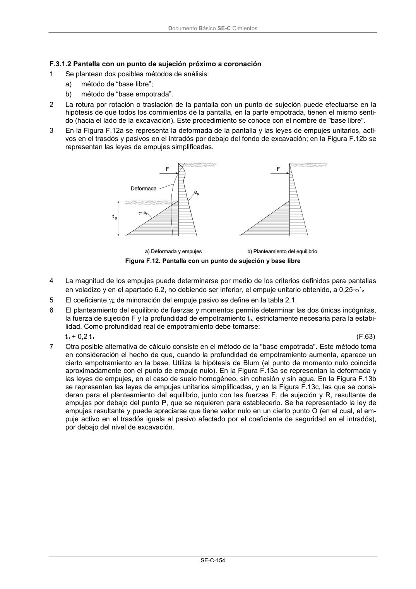

DB-SE-C · Página 159 · versión 2019-12-20
SHA256: a71133f4b0dca253e45ea3071c70f2a512354bcc5cd841bf89b1a502f567ac5e · página física 159 de 165 · métodos de encabezado
solo si están cotejados.
Documento · ← p. 158 · p. 160 →
Formatos: Markdown · JSON de bloques · PDF p. 159 · imagen PNG
Documento Básico SE-C Cimientos
SE-C-154
F.3.1.2 Pantalla con un punto de sujeción próximo a coronación
1
Se plantean dos posibles métodos de análisis:
a)
método de “base libre”;
b)
método de “base empotrada”.
2
La rotura por rotación o traslación de la pantalla con un punto de sujeción puede efectuarse en la
hipótesis de que todos los corrimientos de la pantalla, en la parte empotrada, tienen el mismo senti-
do (hacia el lado de la excavación). Este procedimiento se conoce con el nombre de "base libre".
3
En la Figura F.12a se representa la deformada de la pantalla y las leyes de empujes unitarios, acti-
vos en el trasdós y pasivos en el intradós por debajo del fondo de excavación; en la Figura F.12b se
representan las leyes de empujes simplificadas.
Figura F.12. Pantalla con un punto de sujeción y base libre
4
La magnitud de los empujes puede determinarse por medio de los criterios definidos para pantallas
en voladizo y en el apartado 6.2, no debiendo ser inferior, el empuje unitario obtenido, a 0,25·´v
5
El coeficiente E de minoración del empuje pasivo se define en la tabla 2.1.
6
El planteamiento del equilibrio de fuerzas y momentos permite determinar las dos únicas incógnitas,
la fuerza de sujeción F y la profundidad de empotramiento to, estrictamente necesaria para la estabi-
lidad. Como profundidad real de empotramiento debe tomarse:
to + 0,2 to
(F.63)
7
Otra posible alternativa de cálculo consiste en el método de la "base empotrada". Este método toma
en consideración el hecho de que, cuando la profundidad de empotramiento aumenta, aparece un
cierto empotramiento en la base. Utiliza la hipótesis de Blum (el punto de momento nulo coincide
aproximadamente con el punto de empuje nulo). En la Figura F.13a se representan la deformada y
las leyes de empujes, en el caso de suelo homogéneo, sin cohesión y sin agua. En la Figura F.13b
se representan las leyes de empujes unitarios simplificadas, y en la Figura F.13c, las que se consi-
deran para el planteamiento del equilibrio, junto con las fuerzas F, de sujeción y R, resultante de
empujes por debajo del punto P, que se requieren para establecerlo. Se ha representado la ley de
empujes resultante y puede apreciarse que tiene valor nulo en un cierto punto O (en el cual, el em-
puje activo en el trasdós iguala al pasivo afectado por el coeficiente de seguridad en el intradós),
por debajo del nivel de excavación.
